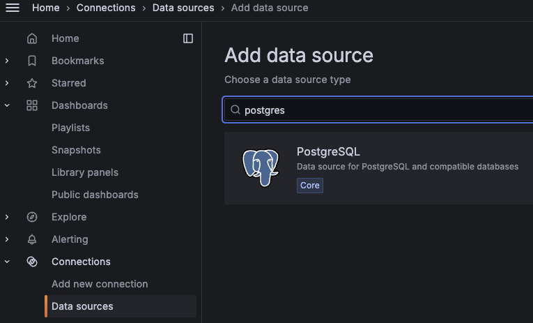
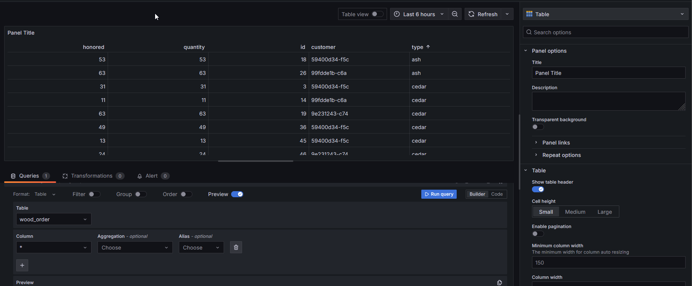
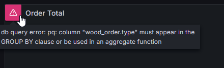
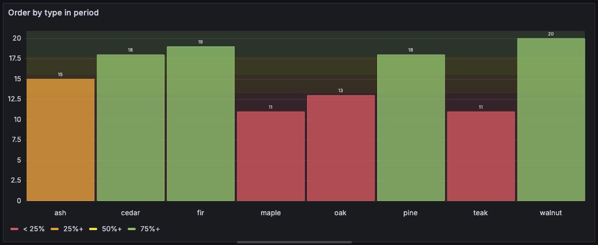
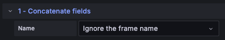
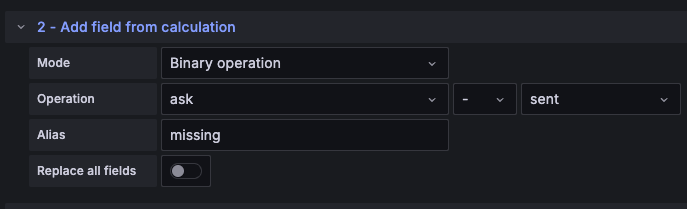
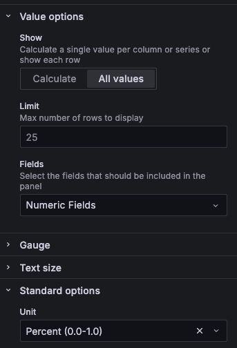

Dashboard Business
Estimated time to read: 6 minutes
On va maintenant changer de Datasource pour aller taper directement dans une base de données.
Data Source
On va créer une nouvelle datasource via le menu Connections > Data sources et choisir PostgreSQL comme type de datasource.

Les informations de connexion sont les suivantes :
| Information | Value |
|---|---|
| URL | postgres:5432 |
| Database | jack |
| User | john |
| Password | viewer |
| TLS/SSL Mode | disable |
Attention à tes doigts
Grafana ne fait aucun contrôle sur les requêtes qui sont envoyées sur la BDD. Un DROP SCHEMA default CASCADE; est assez efficace pour devoir réinitialiser la BDD...
Une bonne pratique est donc d'avoir un compte en read-only pour Grafana pour accéder à la BDD.
Success

On peut maintenant commencer à construire notre dashboard (par exemple en cliquant sur building a dashboard).
Lumbercamp front end
Nous avons actuellement une application qui permet de visualiser les données de notre application. C'est woodstoredashboard.

Cette application stocke les données dans une base de données PostgreSQL. Les deux objets principaux sont les commandes dans la table wood_order et les stocks stock.
On va cette fois-ci faire un dashboard en utilisant cette source de données PostgreSQL. On va afficher les commandes.
Données statiques
Il est possible d'afficher des informations qui ne sont pas temporelles dans un dashboard, en utilisant par exemple le mode de visualisation Table.

ℹ️ Il n'est alors pas possible de sélectionner une plage de temps. Ou plutôt ça ne sert à rien vu que l'information n'existe pas dans les données.
Success
Ajouter 2 visualisations dans le dashboard pour afficher le contenu des 2 tables de la BDD

Stock Status
On souhaite afficher la liste des essences de bois dans le stock.
Pour cela on va :
- créer un widget de type Pie Chart.
- configurer la requête SQL pour faire la somme des quantités de bois par essence depuis la table Stock
- modifier les options pour avoir les pourcentages et les différents types affichés
Si la visualisation est en erreur
Il y a plus de détails sur l'icône warning:

Spoiler la solution est là
sql SELECT SUM(quantity) as quantity, type as type FROM stock GROUP BY type LIMIT 50- On sélectionnera
- les values pour ne pas être en
Calculatemais enAll values - la légende pour être sous la forme d'une table.
- Les labels Percent et/ou Value
- les values pour ne pas être en

Order Total
On va faire la même chose pour les commandes. On va afficher le total des commandes par essence de bois, cette fois-ci avec le pourcentage affiché dans la légende et la valeur affichée sur le graphique.
Le formulaire c'est bien mais les vrais pros utilisent le mode Code
En plus, il y a une fonction d'auto-complétion bien pratique pour les requêtes SQL.
Spoiler la solution est là
sql SELECT sum(quantity), type FROM wood_order w GROUP BY type- On sélectionnera
- les values pour ne pas être en
Calculatemais enAll values - la légende pour être sous la forme d'une table.
- Les labels Percent et/ou Value
- les values pour ne pas être en

Et si on utilisait la colonne Timestamp
Vous avez peut-être remarqué que la table wood_order contient une colonne timestamp.
On va créer un nouveau widget pour avoir une vision de nos commandes à travers le temps.
Lors de l'utilisation de l'auto-complétion, vous devez voir la proposition de fonctions :

Plusieurs macro sont mises à disposition pour faciliter l'utilisation des dates.
Même si nos données ne sont pas au format time series mais que nous avons une information sur le temps, il est possible de faire des graphiques temporels.
Il faut un peu aider Grafana en lui indiquant que la colonne est un timestamp.
Et rajouter une clause where pour prendre en compte la plage de temps ou utiliser un filtre.
Success
- Créer un widget de type Histogramme qui montre le nombre de commandes par type d'essence d'arbre
- Configurer des thresholds à 25%, 50% et 75%

Spoiler la solution est là
sql SELECT count(id), type FROM wood_order WHERE $__timeFilter(timestamp) GROUP BY typeStandard options > Color scheme: `From thresholds (by value)``- Ajouter 3 thresholds
On peut maintenant afficher des données sous la forme d'un histogramme et voir l'évolution des commandes / stock dans le temps en changeant la plage de temps d'affichage.
Encore plus fort : les Transformations
Afin de manipuler les transformations, nous voulons maintenant afficher les quantités qui n'ont pas pu être honorées dans les commandes par type d'essence.
Mais nous n'avons pas directement cette information dans la table wood_order. On a un champ quantité commandée (quantity) et un champ quantité livrée (honored).
On pourrait se passer des transformations avec une bonne grosse requ√™te SQL et des jointures mais ce n'est pas p√©dagogique ! üòâ
L'objectif est donc de:
- Afficher pour chaque type d'essence une Gauge montrant le pourcentage de quantité non-livrée
- Utiliser max. 2 requêtes SQL
- Utiliser uniquement des transformations pour construire la donnée
Besoin d'un coup de pouce ?
On va faire ici 2 requêtes, l'une pour récupérer la quantité effectivement livrée "honored", l'autre pour récupérer la quantité commandée "quantity".

Un autre ?!
La première transformation consiste à "ignorer" les 2 frames pour ne faire qu'un jeu de données 
Success

Spoiler la solution est là
- Il faut faire 2 requêtes SQL pour récupérer les quantités commandées et livrées par commande
- Ajouter une première transformation pour utiliser les données des 2 requêtes comme une seule donnée
- Ajouter une transformation pour calculer le delta entre ce qui a été commandé et ce qui a été livré 
- Ajouter une transformation pour filtrer les résultats strictement positifs

- Ajouter une transformation pour calculer le pourcentage de ce qui est manquant par rapport au total

- Ajouter une transformation pour filtrer les données qui nous intéressent : le type et le pourcentage calculé

- Configurer le widget en type Gauge en affichant toutes les valeurs (All values) des champs numériques (Numeric Fields), avec une unité en *Percent (0.0-1.0) et des thresholds à
0.2,0.5,0.8
Et pour cloturer : les Variables
Il serait intéressant de pouvoir filtrer tous les widgets d'un dashboard en fonction du type d'essence d'arbre par exemple pour avoir les infos filtrées uniquement sur l'essence souhaitée.
Dans cette dernière étape du lab, on va donc ajouter une Variable au niveau du Dashboard pour pouvoir filtrer en fonction de l'essence que l'on souhaite
Configurer la variable
Dans les Settings du dashboard, configurer une variable type_of_wood qui récupère la liste des essences.
Success
Une fois configuré, un champ de filtrage après sur le dashboard listant les différentes essences trouvées ET l'option All

Spoiler la solution est là
Il faut configurer la variable pour utiliser la datasource Postgre et la requête suivante pour récupérer la liste des essences.
Et ne pas oublier de cocher les 2 options :Multi-valueInclude All option
Modifer les widgets
Maintenant que notre variable est disponible, il faut modifier les widgets pour qu'ils la prennent en compte.
Modifier donc les 4 widgets pour que l'on puisse filtrer sur le type d'essence au niveau du dashboard et que dans leur titre les essences choisies soient afficher
Success